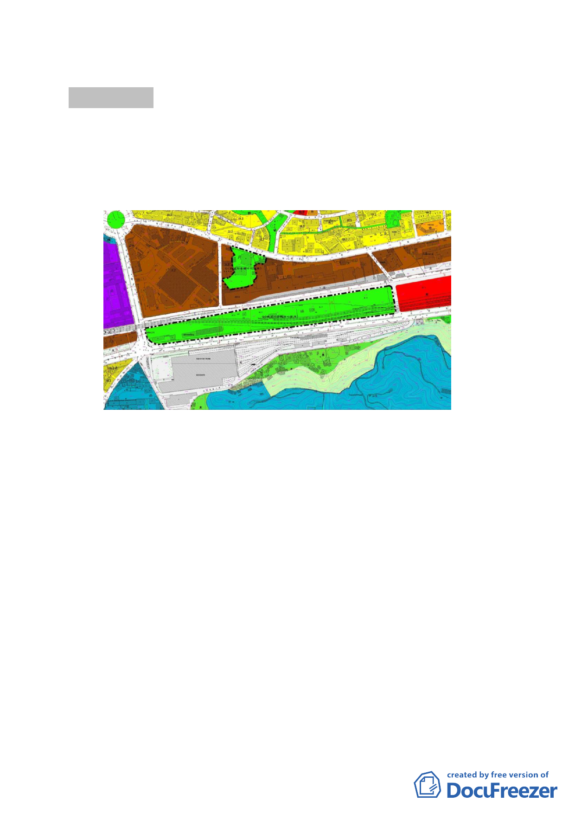

討論事項 三
案名：修訂北部流行音樂中心都市設計管制要點案
案情概要說明：
一、計畫範圍：台北市南港區向陽路與忠孝東路交叉口東北側
之「流行音樂中心」
二、計畫緣起：
本案都市計畫前於 97 年 2 月 26 日公告實施細部計畫案。且
經行政院經濟建設委員會 97 年 12 月 29 日審定為國家推動之
重大建設計畫，該基地採國際競圖方式辦理。為配合國際競
圖賦予建築設計時更彈性之規範，藉以激發規劃單位之創
意，對於基地特殊條件再檢視後，提出修正北部流行音樂中
心細部計畫案都市設計管制要點，爰辦理本計畫。
三、修訂計畫內容：
修訂原計畫「擬定臺北市原南港臺鐵貨運站、中華電信南港
機房及附近地區公園用地（供流行音樂中心使用）暨南港車
站東側商業區細部計畫案都市設計管制要點」中「公共開放
空間系統」、「建築物管制」等部分條文。
四、本案係市府 98 年 8 月 12 日府都規字第 09833758403 號函送
到會。
- 12 -